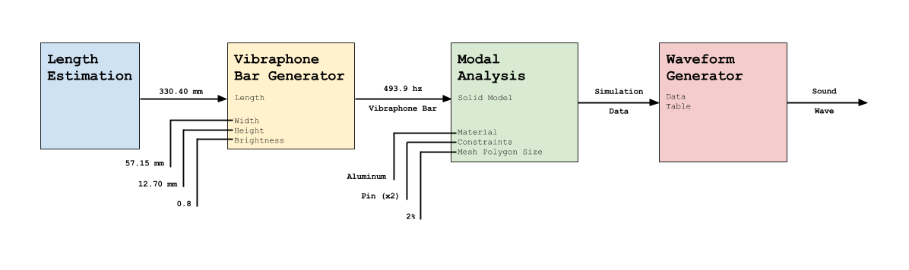

This page outlines the entire workflow used in this study. In addition, links to all required software is included. The following is a rough diagram of the workflow: 
Note that the Length Estimation and Vibraphone Bar Generator steps are not a part of the main workflow. These tasks were carried out in order to determine the dimensions of a vibraphone bar that creates a specific pitch.